| |
|
GRAFİK NESNE KONTROLÜ
|
Kontrol açılır menüsünden Tümünü Aktif Et seçeneği kullanılabilir. Bu komut ile tüm çizgi, sembol, metin ve grafik hücre tipleri aktif edilir. Ayrıca tüm katman grupları, tüm modeller ve tüm kaynaklar da aktif hale getirilir. Tümünü Pasif Et fonksiyonu ile tüm çizgi, sembol, metin ve grafik hücre tipleri pasif edilir. Ayrıca tüm katman grupları da pasif hale getirilir. A* komutu ile daha önce belirtilen tüm nesne tiplerini aktif edebilir ve D* komutu ile pasif hale getirebiliriz. Bu komutlar, daha önce açıklanan seçeneklerle aynı işlevi görür. AL, DL, AS, DS, AR, DR, AC, DC, AM ve DM komutları "*" karakterini joker olarak kabul eder. Örnekler:
Tip Kontrolü Farklı grafik nesne tiplerinin aktifleştirilmesi/pasifleştirilmesi, mevcut tipin belirlenmesi, bilgi alınması vb. ile ilgili tüm işlemler bu başlık altında toplanır. Kontrol → Tip Kontrolü menüsünden tip yönetimine erişilir ve iletişim kutusu açıldıktan sonra farklı nesne sınıfları arasında geçiş yapmak mümkündür. Bu iletişim kutusuna standart araç çubuğundaki ikonu ile de erişilebilir. Çizgi Kontrolü Bu sekme aracılığıyla, aşağıdaki iletişim kutusu üzerinden ISTRAM®/ISPOL®'daki çizgi tiplerinin yönetimiyle ilgili tüm seçeneklere erişilir: 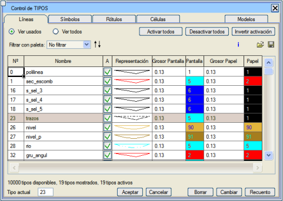
Varsayılan olarak, sadece kullanımda olan çizgi tipleri gösterilir (Kullanılanları Göster seçeneği). Mevcut tüm çizgi tiplerini görmek isteniyorsa, Tümünü Göster seçeneği işaretlenmelidir. Ayrıca, çizgi paletinde tanımlanmış ve kütüphanedeki çizgi tiplerini belirli kriterlere göre sınıflandırmayı sağlayan listelere göre çizgileri filtreleme imkanı da sunulur (idari sınırlar, rölyef ve altimetri, hidrografya ve kıyılar, işaretlemeler, binalar ve yapılar vb.). Tipleri numaralarına, isimlerine, kalınlıklarına vb. göre sıralamak mümkündür. Bunun için sütun başlığına farenin sağ tuşuyla tıklamak yeterlidir. 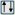 butonuna basılarak herhangi bir zamanda başlangıçtaki sıralamaya geri dönülebilir. Mevcut tip (kullanıcının oluşturacağı herhangi bir çizginin çizileceği tip) gölgeli olarak, seçili tip ise siyah çerçeve ile vurgulanmış olarak görünür. Her tip için, iletişim kutusu aşağıdaki bilgileri içeren sekiz sütun gösterir:
Tüm çizgi tiplerinin aktivasyon durumu üzerinde aşağıdaki seçeneklerle aynı anda işlem yapılabilir:
Bir dizi çizgi tipini aktif etmek veya pasif etmek için, fare ile bir tip aralığı seçilir ve içlerinden birinin durumu değiştirilir; tüm seçili tipler bu sonuncusunun durumuna geçer. Ayrıca, AL#, DL# ve TL# komutları ile klavyeden de çizgi tipleri aktif edilebilir, pasif edilebilir ve mevcut tip olarak seçilebilir (# tip numarasını temsil eder). ALT ve DLT komutları tüm çizgileri aktif eder ve pasif eder. Başka bir yöntem ise, bir çizgi seçildikten sonra farenin sağ tuşuna tıklayıp açılan menüden Tipi Pasif Et seçeneğini kullanmaktır.
 butonuna basılarak .eac uzantılı bir dosyaya kaydedilebilir. Bu yapılandırma butonuna basılarak .eac uzantılı bir dosyaya kaydedilebilir. Bu yapılandırma  butonu ile geri yüklenebilir. butonu ile geri yüklenebilir.İletişim kutusunun alt kısmında toplam, gösterilen ve aktif olan çizgi tipi sayısı hakkında bilgi verilir. Burada ayrıca çizgi tiplerini yönetmek için bir dizi buton bulunur:
Sembol Kontrolü Bu sekme, aşağıdaki iletişim kutusu aracılığıyla ISTRAM®/ISPOL®'daki sembol tiplerinin yönetimiyle ilgili tüm seçeneklere erişim sağlar: 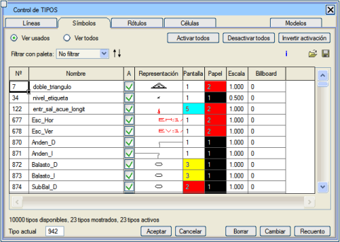
Varsayılan olarak, sadece kullanımda olan sembol tipleri gösterilir (Kullanılanları Göster seçeneği). Mevcut tüm sembol tiplerini görmek isteniyorsa, Tümünü Göster seçeneği işaretlenmelidir. Ayrıca, sembol paletinde tanımlanmış ve kütüphanedeki sembol tiplerini belirli kriterlere göre sınıflandırmayı sağlayan listelere göre sembolleri filtreleme imkanı da sunulur. Tipleri numaralarına, isimlerine, ölçeklerine vb. göre sıralamak mümkündür. Bunun için sütun başlığına farenin sağ tuşuyla tıklamak yeterlidir. butonuna basılarak herhangi bir zamanda başlangıçtaki sıralamaya geri dönülebilir. Mevcut tip (kullanıcının oluşturacağı herhangi bir sembolün çizileceği tip) gölgeli olarak, seçili tip ise siyah çerçeve ile vurgulanmış olarak görünür. Her tip için, iletişim kutusu aşağıdaki bilgileri içeren sekiz sütun gösterir:
Tüm sembol tiplerinin aktivasyon durumu üzerinde aşağıdaki seçeneklerle aynı anda işlem yapılabilir:
Bir dizi sembol tipini aktif etmek veya pasif etmek için, fare ile bir tip aralığı seçilir ve içlerinden birinin durumu değiştirilir; tüm seçili tipler bu sonuncusunun durumuna geçer. Ayrıca, AS#, DS# ve TS# komutları ile klavyeden de sembol tipleri aktif edilebilir, pasif edilebilir ve mevcut tip olarak seçilebilir (# tip numarasını temsil eder). AST ve DST komutları tüm sembolleri aktif eder ve pasif eder.
butonu ile kaydedilebilir ve butonu ile geri yüklenebilir.İletişim kutusunun alt kısmında toplam, gösterilen ve aktif olan sembol tipi sayısı hakkında bilgi verilir. Burada ayrıca sembol tiplerini yönetmek için bir dizi buton bulunur:
Metin Kontrolü Bu sekmeden, aşağıdaki iletişim kutusu aracılığıyla ISTRAM®/ISPOL®'daki metin tiplerinin yönetimiyle ilgili tüm seçeneklere erişilir: 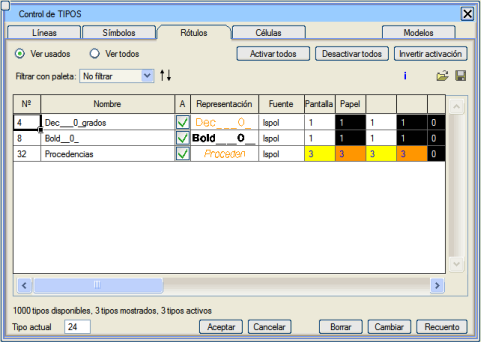
Varsayılan olarak, sadece kullanımda olan metin tipleri gösterilir (Kullanılanları Göster seçeneği). Mevcut tüm metin tiplerini görmek isteniyorsa, Tümünü Göster seçeneği işaretlenmelidir. Ayrıca, metin paletinde tanımlanmış ve kütüphanedeki metin tiplerini belirli kriterlere göre sınıflandırmayı sağlayan listelere göre metinleri filtreleme imkanı da sunulur. Tipleri numaralarına, isimlerine, yazı tiplerine vb. göre sıralamak mümkündür. Bunun için sütun başlığına farenin sağ tuşuyla tıklamak yeterlidir. butonuna basılarak herhangi bir zamanda başlangıçtaki sıralamaya geri dönülebilir. Mevcut tip (kullanıcının oluşturacağı herhangi bir metnin çizileceği tip) gölgeli olarak, seçili tip ise siyah çerçeve ile vurgulanmış olarak görünür. Her tip için, iletişim kutusu on sütunla aşağıdaki bilgileri gösterir:
Tüm metin tiplerinin aktivasyon durumu üzerinde aşağıdaki seçeneklerle aynı anda işlem yapılabilir:
Bir dizi metin tipini aktif etmek veya pasif etmek için, fare ile bir tip aralığı seçilir ve içlerinden birinin durumu değiştirilir; tüm seçili tipler bu sonuncusunun durumuna geçer. Ayrıca, AR#, DR# ve TR# komutları ile klavyeden de metin tipleri aktif edilebilir, pasif edilebilir ve mevcut tip olarak seçilebilir (# tip numarasını temsil eder). ART ve DRT komutları tüm metinleri aktif eder ve pasif eder.
Yukarıdaki altı renk indeksi, ilgili metin tipi tanımlama menüsünde gösterilen ilk boyut aralığına karşılık gelir ve yalnızca o menüden değiştirilebilir. Tüm yapılandırma butonu ile kaydedilebilir ve butonu ile geri yüklenebilir.İletişim kutusunun alt kısmında toplam, gösterilen ve aktif olan metin tipi sayısı hakkında bilgi verilir. Burada ayrıca metin tiplerini yönetmek için bir dizi buton bulunur:
Grafik Hücre (Cell) Kontrolü Bu sekmeden, aşağıdaki iletişim kutusu aracılığıyla ISTRAM®/ISPOL®'daki grafik hücre tiplerinin yönetimiyle ilgili tüm seçeneklere erişilir: 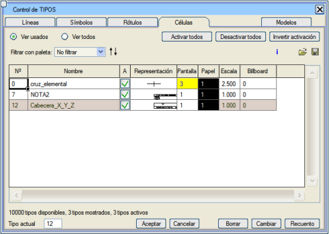
Varsayılan olarak, sadece kullanımda olan grafik hücre tipleri gösterilir (Kullanılanları Göster seçeneği). Mevcut tüm grafik hücre tiplerini görmek isteniyorsa, Tümünü Göster seçeneği işaretlenmelidir. Ayrıca, grafik hücre paletinde tanımlanmış ve kütüphanedeki tipleri belirli kriterlere göre sınıflandırmayı sağlayan listelere göre grafik hücreleri filtreleme imkanı da sunulur. Tipleri numaralarına, isimlerine, ölçeklerine vb. göre sıralamak mümkündür. Bunun için sütun başlığına farenin sağ tuşuyla tıklamak yeterlidir. butonuna basılarak herhangi bir zamanda başlangıçtaki sıralamaya geri dönülebilir. Mevcut tip (kullanıcının oluşturacağı herhangi bir hücrenin çizileceği tip) gölgeli olarak, seçili tip ise siyah çerçeve ile vurgulanmış olarak görünür. Her tip için, iletişim kutusu sekiz sütunla aşağıdaki bilgileri gösterir:
Tüm grafik hücre tiplerinin aktivasyon durumu üzerinde aşağıdaki seçeneklerle aynı anda işlem yapılabilir:
Bir dizi hücre tipini aktif etmek veya pasif etmek için, fare ile bir tip aralığı seçilir ve içlerinden birinin durumu değiştirilir; tüm seçili tipler bu sonuncusunun durumuna geçer. Ayrıca, AC#, DC# ve TC# komutları ile klavyeden de hücre tipleri aktif edilebilir, pasif edilebilir ve mevcut tip olarak seçilebilir (# tip numarasını temsil eder). ACT ve DCT komutları tüm hücreleri aktif eder ve pasif eder.
butonu ile kaydedilebilir ve butonu ile geri yüklenebilir.İletişim kutusunun alt kısmında toplam, gösterilen ve aktif olan hücre tipi sayısı hakkında bilgi verilir. Burada ayrıca sembol tiplerini yönetmek için bir dizi buton bulunur:
Tipler Tablosu 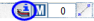Bahsedilen tip kontrol yöntemlerine ek olarak, mesaj alanındaki ilgili ikona tıklandığında açılan tablodan tipleri aktif etme imkanı da vardır. 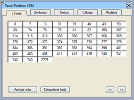Bu seçenek, çizimde mevcut olan tüm tipleri gösteren bir menü açar ve bunları aktif etmeye veya pasif etmeye de olanak tanır. İlgili tabloyu görmek ve doğrudan aktif/pasif edilecek tipe tıklamak için nesne tipini seçmek yeterlidir. Ayrıca modeller tablosuna da bir erişim sunar. Ayrıca, sırasıyla [Tümünü Aktif Et] ve [Tümünü Pasif Et] butonları aracılığıyla tüm tip ve modelleri tek bir işlemde aktif etme veya pasif etme imkanı sunar. Grup Kontrolü Kontrol → Grup Kontrolü menüsünden, aşağıdaki iletişim kutusu aracılığıyla ISTRAM®/ISPOL®'daki tip gruplarının yönetimiyle ilgili tüm seçeneklere erişilir: 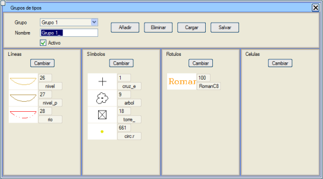
Amaç, tip kümelerini tek bir işlemde aktif edip pasif edebilmektir. Her grup istenen tipleri içerebilirken, bir tip en fazla bir gruba ait olabilir. Yeni bir tip grubu oluşturmak için [Ekle] butonuna basmak yeterlidir. Varsayılan olarak, ilk grup (boş olsa da) zaten mevcuttur, bu yüzden oluşturulması gerekmez. Her grubun ayrıca varsayılan olarak Grup # şeklinde (# grup numarasını belirtir) atanmış açıklayıcı bir adı vardır. Grup ve dolayısıyla ona bağlı tüm tipler, Aktif kutucuğu işaretli olduğu sürece aktif kalacaktır. [Sil] butonu seçili grubu siler. 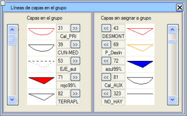Belirli bir sınıftaki tipleri eklemek veya çıkarmak için, ilgili nesne sınıfının [Değiştir] butonuna basmak gerekir. O zaman iki sütunlu bir kutu açılır; solda o anda grupta bulunan o sınıftaki tipler, sağda ise çizimde mevcut olup henüz hiçbir gruba ait olmayan tipler gösterilir. Resimde gösterildiği gibi, onları bir taraftan diğerine geçirmek için [>>] ve [<<] butonlarına basmak yeterlidir. Bu kutu kapatıldıktan sonra, yeni düzenleme ile grup kontrolü kutusuna geri dönülür. Oluşturulan tip grupları ve aktivasyon durumları, .grc uzantılı dosyalar aracılığıyla diske kaydedilebilir ve daha sonra yüklenebilir. Model Kontrolü Kontrol → Model Kontrolü menüsünden, aşağıdaki iletişim kutusu aracılığıyla ISTRAM®/ISPOL®'daki modellerin yönetimiyle ilgili tüm seçeneklere erişilir: 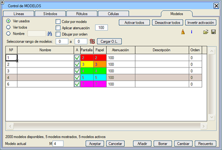
Model ataması aşağıdaki durumlarda otomatiktir:
kutucuğundan, hiçbir nesne (çizgi, metin, nokta ve hücre) içermeyen modellerin isimleri silinebilir. Modelleri numaralarına, isimlerine vb. göre sıralamak mümkündür. Bunun için sütun başlığına farenin sağ tuşuyla tıklamak yeterlidir. Modele göre renklendir seçeneği, çizimdeki nesneleri tiplerine göre değil, modellerine göre renklendirmeye olanak tanır. Bu seçenek, Plan menüsündeki güzergahların geçici olarak yazdırılması üzerinde de etkilidir. Bir modele pencerenin arka planıyla aynı renk indeksi atandığında, bu modele ait nesneler, modelin rengi dikkate alınmadan normal şekilde çizilir. Her model için, iletişim kutusu yedi sütunla aşağıdaki bilgileri gösterir:
Tüm modellerin aktivasyon durumu üzerinde aşağıdaki seçeneklerle aynı anda işlem yapılabilir:
Bir model aralığını aktif etmek veya pasif etmek için, ya fare ile ya da Model aralığı seç seçeneği ile bir model aralığı seçilir ve içlerinden birinin durumu değiştirilir; tüm seçili modeller bu sonuncusunun durumuna geçer. Ayrıca, AM#, DM# ve TM# komutları ile klavyeden de modeller aktif edilebilir, pasif edilebilir ve mevcut model olarak seçilebilir (# model numarasını temsil eder). AMT ve DMT komutları tüm modelleri aktif eder ve pasif eder. Ayrıca, AM#, DM# ve TM# komutları ile klavyeden de MODEL # aktif edilebilir, pasif edilebilir ve mevcut olarak seçilebilir. AMT ve DMT komutları tüm modelleri aktif eder ve pasif eder.
Sıraya göre çiz seçeneği, Sıra sütunu ile birlikte, modelleri belirtilen sıraya göre çizmeyi sağlar; önce numarası daha düşük olan modeller çizilir. Model kontrolüne ilişkin tüm yapılandırma butonu ile .mod uzantılı bir dosyaya kaydedilebilir. Bu yapılandırma butonu ile geri yüklenebilir.İletişim kutusunun alt kısmında toplam, kullanılan ve aktif olan model sayısı hakkında bilgi verilir. Burada ayrıca modellerin içeriğini yönetmek için bir dizi buton bulunur:
Modeller Tablosu 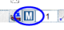Modeller tablosu, arayüzün alt kısmındaki ikonlar alanında bulunan 'M' harfli ikona tıklandığında veya F6 tuşuna basıldığında açılır. 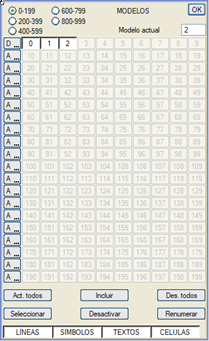Tablo, modellerin 200'lük aralıklarla gösterilmesi sayesinde aktivasyon durumlarını daha hızlı bir şekilde görüntülemek için tasarlanmıştır. Ayrıca mevcut modeli değiştirmeye de olanak tanır. Aktif modeller basılı butonlar şeklinde, pasif modeller ise basılmamış butonlar şeklinde gösterilir. Kullanımda olmayan modeller, üzerine tıklanamayan butonlar olarak gösterilir. Dolayısıyla, aktivasyon durumunu değiştirmek için mevcut bir modele tıklamak yeterlidir. Örneğin, ekteki resimde mevcut model 6'dır, 0'dan 14'e kadar olan modellerde ve ayrıca 50 ve 52'de grafik nesneler bulunmaktadır ve 11 ile 12 hariç hepsi aktiftir. Her model sırasının önünde, bir model sırasının tamamını aktif etmek/pasif etmek için "A" ve "D" butonları bulunmaktadır. Alt kısımdaki seçenekler ise şunlardır:
Bu tablo aracılığıyla modellerin aktivasyon durumunda yapılan herhangi bir değişiklik, çizimdeki değişiklikleri görebilmek için bir yeniden çizim (örneğin, fare tekerleği ile zoom yaparak) gerektirir. Kaynak Kontrolü 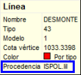ISTRAM®/ISPOL® içindeki çizgi, sembol, metin, hücre gibi nesneler, kaynakları hakkında bilgi içerir. Bu bilgi, imleç nesnenin üzerinde durduğunda çıkan ipucu (hint) penceresinde görülebilir. Kaynak, bir edm dosyasının adı, oluşturuldukları Istram modülü veya oluşturulmaları için kullanılan belirli bir araç ya da veri dosyası olabilir; örneğin bir yüzey, bir .ali dosyası ile yapılan yazılandırma, bir .lil dosyası ile eksen çizim modu vb. Şu kaynakları ayırt edebiliriz: Plan Güzergahı, Z-L3D, ISPOL.ali, ISPOL.lil, ISPOL.gui, ISPOL.gut, Sanat Yapıları, Yol Çizgileri, Güzergah Yazılandırması, Enkesitlere Göre Yazılandırma, Genişletme/Dever Yazılandırması, Tepe/Dere Noktaları Yazılandırması, Taşıt Dönüş Yörüngeleri, 3B Çizgi Çiz, Sulama Alanları, Kavşak Ölçülendirmesi, Geopak Çizimleri, Makaslar (Plan), Adalar (Dönel Kavşaklar). Bu menüye girmek için Kontrol açılır menüsünden, Kaynak Kontrolü'ne veya ekranın üst kısmında bulunan  kısayolundan erişebiliriz. kısayolundan erişebiliriz.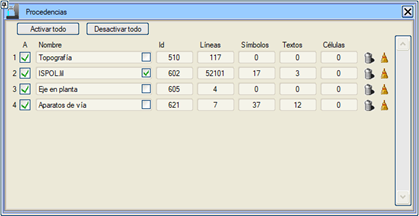
Tümünü Aktif Et ve Tümünü Pasif Et kutucukları aracılığıyla kaynağa göre tüm nesneleri aktif edebilir veya pasif hale getirebiliriz. Ayrıca her kaynağın yanındaki onay kutusu ile belirli bir kaynağı aktif edebilir veya pasif hale getirebiliriz. Kaynak adının sağında bulunan onay kutusu ile bazı kaynakları işaretlemek mümkündür. Böylece ekranda veya paftalarda yeniden çizim yapıldığında, vurgulanan kaynaklar ikinci bir geçişte çizilir ve bu kaynaklara ait çizgilerin (dolu veya opak dolgu), sembollerin, metinlerin ve hücrelerin dolguları, vurgulanmamış kaynaklara ait tüm nesneleri örter. Çöp kutusu ikonu  ile kaynağa göre silebilir ve süpürge ikonu ile kaynağa göre silebilir ve süpürge ikonu  ile kaynağı temizleyebiliriz. ile kaynağı temizleyebiliriz. Bu, diğer araçlar veya modüller tarafından oluşturulan nesnelerin kaybolmasını önler. Yüzey Kontrolü Yüzeyler, ISTRAM®/ISPOL®'un en önemli bileşik nesne türüdür, çünkü arazi profilleri, kübaj hesaplamaları, belirli kotların elde edilmesi vb. işlemler bu yüzeylerden yapılır. 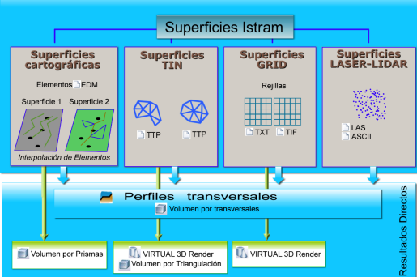
ISTRAM®/ISPOL®, çeşitli yüzey tipleriyle çalışmaya olanak tanır:
Kontrol → SAM Yüzey Kontrolü menüsünden ve ayrıca standart araç çubuğundaki  ikonundan erişilebilen iletişim kutusu, farklı sayısal arazi modellerini yönetmek ve birleştirmek için tasarlanmıştır: ikonundan erişilebilen iletişim kutusu, farklı sayısal arazi modellerini yönetmek ve birleştirmek için tasarlanmıştır: Bu yüzeylerin her birinden kendi özel iletişim kutusuna erişilebilir. Kutuda ayrıca, her bir SAM yüzeyi için enkesitlerdeki gösterimi için bir çizgi tipi tanımlanır.  kutucuğu ile bir veriyi silebiliriz. Belirli bir SAM yüzeyini yanındaki kutucukla aktif veya pasif yapabilir veya kutucuğu ile bir veriyi silebiliriz. Belirli bir SAM yüzeyini yanındaki kutucukla aktif veya pasif yapabilir veya  ikonları ile hepsini aynı anda aktif edebilir veya pasif hale getirebiliriz. ikonları ile hepsini aynı anda aktif edebilir veya pasif hale getirebiliriz.Bir SAM yüzeyi pasif hale getirildiğinde, ondan enkesit alınmaz ve ayrıca:
[Kaydet] ve [Yükle] butonları, sırasıyla, projede tanımlanan yüzeyleri .csm dosyaları kullanarak kaydetmeye ve geri yüklemeye olanak tanır. En fazla 120 yüzey yüklenebilir. Enkesit çıkarılması için aynı anda kesilebilirler.
Enkesit Çıkarma Modları Enkesitlerin çıkarılması yüzey tipine bağlıdır:
 Şev Başı/Eteği (Extraplomos):
Bu, Enkesitler->Seçenekler menüsündeki "Sözde-dikey ve şev başı/eteği olan duvarlar" seçeneğine eşdeğerdir, ancak farklı modlardaki yüzeyleri birleştirmeye olanak tanır.
BIM ağacından edm'ye aktarılan nesnelerin, hatta IFC'den içe aktarılanların profillerini çıkarmak için kullanışlıdır, böylece geometrileri enkesitte görülebilir.
İlk durumda program, profillerin çıkarıldığı bölgelere bağlı olarak SAM'leri dinamik olarak yükler ve boşaltır. Özellikle bu iletişim kutusundan, görüntülerden herhangi bir bölgeyi işaretleyerek çıkarmak mümkündür.
Grid çizgilerini oluştur kutucuğu ile mevcut çizgi tipini kullanarak gridi sayısal harita çizgileri şeklinde oluşturabilirsiniz. Bölge Yükle komutu ile Satırlar ve Sütunlar tarafından belirlenen yüklenmiş görüntünün belirli bir bölümünü seçebiliriz. SAM Gridini Gör kutucuğu ile görüntünün satırlarını ve sütunlarını bir grid aracılığıyla görürüz. 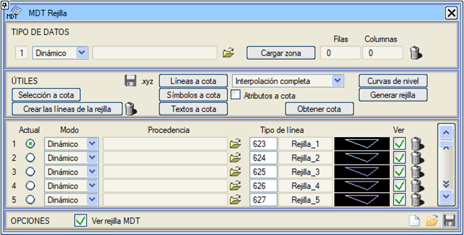
SAM Gridini Gör seçeneği, kapladığı alanı görselleştirmeye olanak tanır. Çok yoğun bir grid durumunda, her sütun ve her satır için değil, sadece bazıları için çizgiler oluşturacaktır.
Bu kutudan ayrıca, grafik nesnelerin kotunu değiştirmeye olanak tanıyan yardımcı araçlara da erişilir.  ikonu ile grid dosyasının X,Y,Z koordinatlarını içeren bir .xyz dosyası kaydedilebilir. ikonu ile grid dosyasının X,Y,Z koordinatlarını içeren bir .xyz dosyası kaydedilebilir.Statik veya dinamik olsun, en fazla beş grid modeli tanımlanabilir. 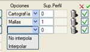SAM Yüzey Kontrolü menüsü içinde, MDT Tipi olarak Grid seçildiğinde, Seçenekler sütununda verilerin interpolasyonunu yapmak isteyip istemediğinizi seçmenize olanak tanır. SAM Grid Kontrolü'nde 100 adede kadar Veri kabul edilir, ancak birkaç dosya aynı yüzeyi farklı bölgelerde temsil ediyorsa, bunları tek bir görüntü ağacı olarak (tek bir veri) yüklemek ve farklı seviyeleri temsil ederken farklı veriler kullanmak daha verimlidir. [Başlat], [Kaydet] ve [Yükle] butonları, sırasıyla, projede tanımlanan yüzeyleri .crm dosyaları kullanarak başlatmaya, kaydetmeye ve geri yüklemeye olanak tanır.
No sütununda, o yüzeyin kendi türündeki yüzeyler içindeki indeksi belirtilir. Örneğin, 4 sayısal harita yüzeyi tanımlanmışsa, bunlar 1, 2, 3 ve 4 olacaktır. Enk. Yüzeyi sütununda, enkesitteki yüzey numarası belirtilir. '0', o yüzeyden enkesit alınmayacağını belirtirken, daha büyük bir değer atanmış olanlar, her yüzey için enkesitte bir çizgi elde edilecek şekilde tanımlanır (çoklu yüzey profilleri). BİRLEŞTİRİLMİŞ YÜZEYLER ISTRAM®/ISPOL®, enkesitler elde etmek amacıyla diğer yüzeylerin birleşiminden oluşan yüzeylerle çalışmaya olanak tanır. Bunun için, tek bir yüzey oluşturan yüzeylere aynı enkesit yüzey numarasını atamak yeterlidir. Profilin gösterimi için, bunlardan ilkinin çizgi tipi kullanılacaktır. Enkesitler için yüzeylerin birleştirilmesi, enkesit editörünün tamamlama işlemine benzer şekilde çalışır: program, profili oluşturmak için birleşimin ilk yüzeyini kullanır ve profilin olmadığı yerlerde, birleşimin geri kalan yüzeyleriyle tamamlar (sonuçta ortaya çıkan profil, ilkinin aynı numaraya sahip diğerleriyle tamamlanmasıyla elde edilir). Örneğin, aşağıdaki örnekte 5 yüzey tanımlanmıştır:
Aynı kapalı bir cismin tavanını ve tabanını oluşturan yüzey çiftleriniz varsa, bu cisimlerin enkesitlerini doğrudan oluşturabilirsiniz. Bunun için Enk. Yüzeyi sütununa N cisminin tavan veya taban yüzeyini ekleyin ve bir sonraki satıra tamamlayıcı yüzeyi -N olarak ekleyin. Enkesit oluşturucu, N yüzeyini -N ile kapatır. Aynı anda birkaç kapalı cisim olabilir. Tanımlanabilecek SAM yüzey sayısı 1000'e kadardır. Yardımcı Araçlar Ayrıca, çizgi ve sembollerin kotlarını mevcut yüzeye uyarlayarak değiştirmeye yönelik bir dizi yardımcı araç da bulunmaktadır:
Sayısal Harita Yüzeyleri Kontrolü ISTRAM®/ISPOL®'da bir sayısal harita yüzeyi, şunlardan oluşan bir grafik nesnedir:
Varsayılan olarak, 1 numaralı sayısal harita yüzeyi, sırasıyla normal ve ana eş yükselti eğrileri olan 26 ve 27 tipi tüm çizgilerle temsil edilir. Kullanıcı, örneğin, geçerli bir kota sahip olmaları koşuluyla, karayolu kenarları, yollar, evler, çitler vb. temsil eden diğer çizgi tiplerini de buraya dahil edebilir, çünkü bir sayısal harita yüzeyini temsil eden sayısal model, bu çizgilerden herhangi biri kot dışındaysa bozulacaktır. Belirli bir sayısal harita yüzeyini belirleyen nesneler, ait oldukları tipten bağımsızsa (örneğin, belirli çizgiler ve semboller, ancak aynı tipteki TÜMÜ değilse), o zaman onları içeren modeli/modelleri sayısal harita yüzeyine dahil etmek yeterlidir. Bu şekilde, ISTRAM®/ISPOL®'da sayısal harita yüzeylerinin tanımlama olanakları, büyük çok yönlülüğü sayesinde oldukça geniştir.
Bir çizgi, sembol, metin veya model tipi birden fazla sayısal harita yüzeyine ait olabilir. Örneğin, "yarma şev başı" ve "dolgu şev eteği" çizgileri, aynı anda karayolu yüzeyine ve orijinal topografik yüzeye ait olabilir. Bir sayısal harita yüzeyi, bir edm/edb dosyasında bulunan tüm elemanlar (çizgiler, semboller ve metinler) aracılığıyla da tanımlanabilir. Bu dosyalar buradan yüklendiğinde düzenlenemezler. 1200, 1201, ... kaynaklarında saklanırlar. Çizimleri Ver edm/edm butonu ile gizlenebilir veya bir soluklaştırma seviyesi (0-100) tanımlanabilir. Ayrıca, Yapılandırma-> Topografya: [ ] .ctp ve .csm'de Yolu kaydet aktif ise bu dosyaların tam yolu .sup ve .csm dosyaları içinde arşivlenebilir. SAYISAL HARİTA YÜZEYLERİ KONTROL SEÇENEKLERİ Yüzeylerin tanımlanması ve değiştirilmesi Kontrol → Sayısal Harita Yüzeyleri Kontrolü menüsünden (ayrıca  butonundan da erişilebilir) aşağıdaki iletişim kutusu aracılığıyla yapılır: butonundan da erişilebilir) aşağıdaki iletişim kutusu aracılığıyla yapılır: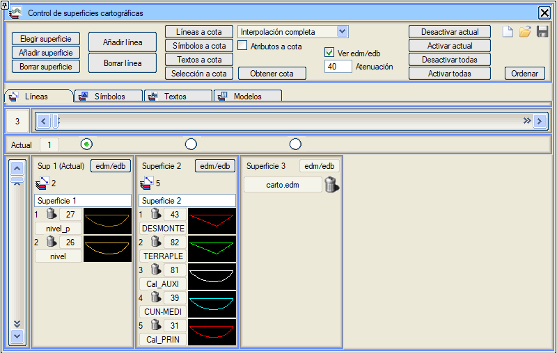
Burada tanımlanan farklı sayısal harita yüzeyleri, adları ve her birini oluşturan nesneler gösterilir. Netlik açısından, her sayısal harita yüzeyine ait olan tip veya modeller sadece sınıflarına göre gösterilir ve her biri için bir sekme bulunur (çizgiler, semboller, metinler ve modeller). Böylece, seçilen sekme Çizgiler ise, her sayısal harita yüzeyini oluşturan çizgi tipleri görünür; Noktalar ise, sayısal harita yüzeyine ait sembol tipleri gösterilir; Metinler ise, sayısal harita yüzeyinin metin tipleri gösterilir ve Modeller ise, o sayısal harita yüzeyine ait olan her bir modelin adı ve numarası gösterilir.  ikonu ile mevcut yüzeyi belirleriz, böylece ihtiyaç duyduğumuz çizgileri, sembolleri vb. ekleyebiliriz. ikonu ile mevcut yüzeyi belirleriz, böylece ihtiyaç duyduğumuz çizgileri, sembolleri vb. ekleyebiliriz.
Bir sayısal harita yüzeyine bir tip veya model eklemek için, [Çizgi Ekle] / [Nokta Ekle] / [Metin Ekle] / [Model Ekle] butonuna (aktif sekmeye göre) basmak ve ekranda o tip veya modele ait bir nesneye tıklamak veya yazmak yeterlidir. Mevcut sayısal harita yüzeyinden bir tip veya modeli kaldırmak için, [Çizgi Sil] / [Nokta Sil] / [Metin Sil] / [Model Sil] butonu kullanılır ve ardından ya ekranda o tip veya modele ait bir nesneye tıklanır ya da ona bağlı  ikonuna basılır. ikonuna basılır.Sayısal harita yüzeylerini yönetmek için diğer seçenekler şunlardır:
Bu sayısal harita yüzeyleri tanımları, ISTRAM®/ISPOL® sisteminin her yerinden görülebilir ve bu menüden çıkıldığında kaybolmaz. Oturum kapatıldığında, çalışma dizininde mevcut sayısal harita yüzeyleri tanım durumunu içeren ISPOL.sup dosyası oluşturulur. Yeni bir oturum başlatıldığında, çalışma klasöründe ISPOL.sup dosyası varsa, bu dosya otomatik olarak yüklenir ve böylece önceki oturumun kapatıldığı sayısal harita yüzeyleri tanım durumu geri yüklenir. Eğer ISPOL.sup dosyası bulunmazsa, varsayılan olarak 26 ve 27 numaralı çizgilerden oluşan bir sayısal harita yüzeyi oluşturulur. Aşağıdaki dört seçenek, diğer şeylerin yanı sıra, farklı çizgi ve sembol tiplerinin sayısal harita yüzeylerine atanmasını kontrol etmeye olanak tanır:
Bu kutudan ayrıca, grafik nesnelerin kotunu değiştirmeye olanak tanıyan aynı yardımcı araçlara da erişilir. TTP'lerin Kontrolü Kontrol → TTP'lerin Kontrolü menüsünden veya  butonundan erişilebilen bu iletişim kutusundan, .ttp dosyalarından gelen sayısal arazi modellerini yönetmek mümkündür. Bu modeller, enkesitlerin çıkarılması için GÜZERGAH ESASLI PROJELER modülünde, bir veya iki model gerektiren yardımcı programlar için YÜZEY MODELLEME modülünde veya TOPOGRAFYA'da oluşturulan model için kullanılabilir. butonundan erişilebilen bu iletişim kutusundan, .ttp dosyalarından gelen sayısal arazi modellerini yönetmek mümkündür. Bu modeller, enkesitlerin çıkarılması için GÜZERGAH ESASLI PROJELER modülünde, bir veya iki model gerektiren yardımcı programlar için YÜZEY MODELLEME modülünde veya TOPOGRAFYA'da oluşturulan model için kullanılabilir..ttp dosyaları aracılığıyla enkesitler kesilirken, TTP'lerin Kontrolü iletişim kutusundaki tüm aktif TTP'lere karşı enkesitler kesilir. Aynı anda yüklenebilen 1000 adede kadar TTP/TTG kullanma imkanı vardır. İletişim kutusu, dosyaları yüklemeye veya kaldırmaya , gösterimi için bir çizgi tipi tanımlamaya ve gösterimini  aktif etmeye veya pasif hale getirmeye olanak tanır. Ayrıca mevcut yapılandırmayı kaydedebilir veya kaydedilmiş bir yapılandırmayı yeniden yükleyebiliriz. aktif etmeye veya pasif hale getirmeye olanak tanır. Ayrıca mevcut yapılandırmayı kaydedebilir veya kaydedilmiş bir yapılandırmayı yeniden yükleyebiliriz.Yüklenen her .ttp dosyasının yanında, Topografya menüsüne giderek  onu düzenleme imkanımız vardır. onu düzenleme imkanımız vardır.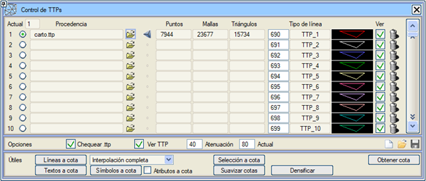
Ayrıca bir TTP'yi mevcut olarak seçmek de mümkündür. Mevcut olarak seçilen TTP:
[Kotları Yumuşat], mevcut TTP'nin bir kopyasını oluşturarak, noktalarının kotlarını yakındaki noktaların kotlarına göre değiştirir ve böylece "tepeler" oluşturan aralarındaki ani değişiklikleri yumuşatır. |